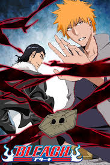

El anime es un medio de gran expansión en Japón, siendo al tiempo un producto de entretenimiento comercial y cultural, lo que ha ocasionado un fenómeno cultural de masas y una forma de arte tecnológico.5 Está potencialmente dirigido a todos los públicos, desde niños, adolescentes y adultos; hasta especializaciones de clasificación esencialmente tomada de la existente para el manga, con clases base diseñadas para especificaciones sociodemográficos tales como empleados, amas de casa, estudiantes, etc. Suelen tratar sobre sujetos, temas y géneros tan diversos como el amor, aventura, ciencia ficción, cuentos infantiles, literatura, deportes, horror, fantasía, comedia y muchos otros.
Animes Populares
- Naruto
- One piece
- Boku no Hero
- Bleach 


Los animes se emite por temporadas
- Otoño
- Invierno
- Verano
- Primera